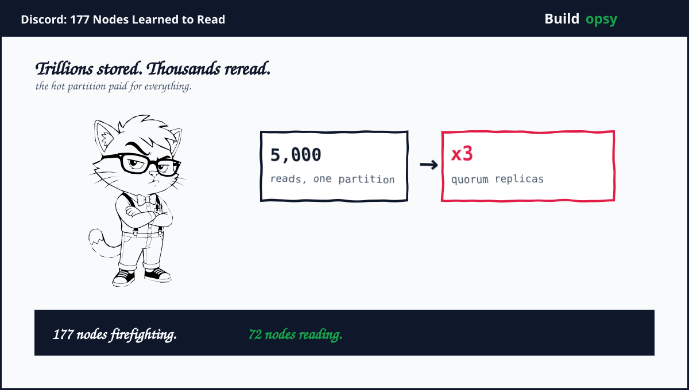
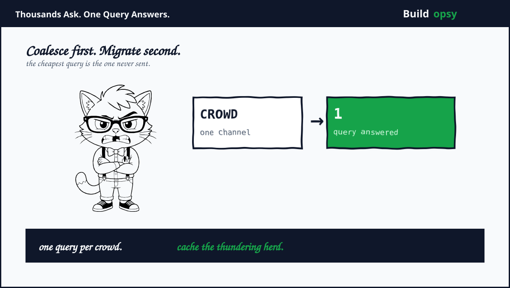

1. The Table That Outgrew the Cluster
Discord started message storage on MongoDB, then moved to Cassandra in 2017 for scale, fault tolerance, plus low maintenance. Twelve nodes held billions of messages. The design worked. Then Discord grew the way successful chat products grow: more servers, more channels, more history worth keeping. By early 2022 the messages cluster ran 177 Cassandra nodes holding trillions of messages. Same table. Same schema. Fifteen times the hardware for a workload that had quietly changed shape underneath.
All messages lived in one table partitioned by channel plus time bucket. That schema models writes beautifully. Each write lands exactly once in exactly one place. Reads tell another story. Opening a popular channel fires thousands of requests at the same partition within seconds. The partition heats up. Replicas queue. Latency climbs on exactly the nodes every other query also needs. Discord had built a write-optimized schema for a read-dominated product. The bill arrived as latency, not as errors, which made it easy to misread for years.
2. Why Reads Broke First
Quorum consistency turned a hot partition into a neighborhood fire. Discord reads plus writes at quorum, so every query touches a majority of replicas. When one partition saturates its nodes, all queries landing on those nodes slow down, including queries for completely cold channels that happened to share hardware. One popular channel taxed strangers. Engineers call this the noisy neighbor problem. Here the neighbor owned the building.
Then the JVM collected its own tax. Cassandra runs on Java, so garbage-collection pauses arrived on top of queueing delay. Compaction backlogs added a third queue. Three waiting lines stacked: hot partition queueing, GC pauses, plus compaction debt. Tail latency spread from 40ms toward 125ms at p99 while medians looked almost healthy. The team called the era firefighting, which is the honest name for operating a database whose worst case keeps relocating.
Model the amplification roughly. Take one hot channel drawing 5,000 reads per second to a single partition with replication factor 3 at quorum 2. That is 10,000 replica reads per second concentrated on a handful of nodes, each also serving its normal cold load. Double the hot channels during an event night. The saturated set grows faster than the fleet because quorum multiplies every hot read across replicas. Adding nodes dilutes cold load while leaving the hot set saturated. This is why 177 nodes felt small. The hot set was the cluster.
3. The Math of Overkill
Count the overkill directly. The migration landed on 72 ScyllaDB nodes doing the work of 177 Cassandra nodes. That is 105 nodes retired, a 59 percent fleet reduction, before counting the eliminated firefighting toil. Model fleet cost from public cloud list prices for memory-heavy database machines plus attached SSDs. Even conservative per-node pricing puts the retired capacity in the low millions per year. The overkill was never one bad decision. It was the compound interest of a schema plus an engine plus an operating model, all priced monthly.
The engine swap deserves its own line. ScyllaDB reimplements Cassandra storage in C++, which removes JVM garbage-collection pauses by construction. Same protocol, same queries, no stop-the-world tax. Discord paired the engine with denser hybrid storage combining persistent disks plus NVMe SSDs, cutting disk utilization by a modeled 53 percent per the published account. Faster engine plus denser disks explains part of the 177-to-72 drop. The rest came from never asking the database the same question twice, which is the next section.
Price the read path with the RPS envelope calculator. A few million chat events per second at a blended infrastructure price, sustained all month, dwarfs the database line it sits on. Every duplicate read eliminated upstream deletes its share of that envelope. Coalescing is not an optimization here. It is the difference between pricing the crowd once versus pricing every member.

4. What Went Wrong in the Design
The schema modeled writes while reads paid rent. Channel plus time-bucket partitioning is elegant for ingestion plus brutal for fan-in reads. Partition keys should follow the hottest access path, not the tidiest write path. The hottest path was always opening a channel.
Quorum everywhere multiplied every hotspot. Uniform consistency levels are simple to reason about plus expensive under skew. Hot data deserved special handling long before it deserved 177 nodes. Consistency is a per-workload decision wearing a global default.
A JVM carried tail-latency workloads. Garbage collection pauses are a rounding error at p50 plus a headline at p99. Chat is a p99 product. Nobody notices median latency in a conversation. Everyone notices the stuck message.
Toil substituted for architecture. Years of firefighting kept the cluster alive while the structural fix waited. Toil compounds like debt. Each incident paid interest on the same schema instead of principal.
5. What Should Happen Instead
First, coalesce before you scale. Discord built Rust data services speaking gRPC that route one channel to one instance by consistent hashing, then merge overlapping reads for the same message into a single database query. Thousands of readers, one query. This single layer bought the team years of runway plus made the later migration boring, which is the highest praise infrastructure can earn.
Second, route by heat, not by habit. Consistent-hash routing on channel id concentrates hot keys where coalescing can reach them. Random load balancing would have spread the crowd past the merger. Locality is a feature when the workload has celebrities.
Third, pick engines without pause taxes for latency products. The ScyllaDB move kept the protocol plus queries while deleting garbage collection from the latency equation. Compatibility preserved the investment. The rewrite preserved the evenings.
Fourth, migrate the boring way, then cheat honestly. Discord staged recent data on the new engine while backfilling history behind it. When the stock migrator projected three months, an engineer plus two colleagues rewrote it in Rust in about a day. Rewriting the tool instead of enduring the tool is sometimes the schedule.
Fifth, measure the hot set, not the fleet. Dashboards showing 177 healthy nodes hid a saturated handful. Track per-partition heat, per-replica queue depth, plus coalescing hit rate. The cluster is healthy when its hottest partition is bored.
6. The Verdict
Discord published one of the great scaling honesties: a beloved product admitting its database grew fifteenfold while the actual problem fit in one partition key. The fix stack reads like a syllabus. Coalescing layer in Rust. Consistent-hash routing. Compatible engine swap. Denser hybrid storage. A one-day migrator rewrite. No heroics, just measurement plus the courage to blame the schema.
The pattern travels. Every read-heavy product with a write-modeled schema is running a smaller version of this incident. Find your hottest partition tonight. Count how many nodes serve it. Then ask what the fleet would cost if the crowd asked once. The bill is hiding in the boundary between one write path plus a thousand read paths.
177 nodes. 72 nodes. One coalescing layer. The crowd was the capacity all along.
Sources and Method
This postmortem follows Discord Engineering publications plus ScyllaDB case coverage. Node counts, latencies, plus migration steps come from the published accounts. Cost framing is modeled from public cloud list prices.